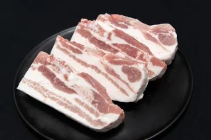

축산물 이력번호 거짓표시 처벌 강화｜2027년 1월 전 판매 점검표

돼지고기 삼겹살 참고 사진. 이력번호 표시 모범 사례나 위반 제품을 나타내지 않습니다.
농림축산식품부는 2027년 1월 8일부터 축산물 이력번호 거짓표시 처벌이 강화된다고 안내했습니다. 온라인 판매자는 상세페이지의 번호와 실제 출고 로트를 연결해 확인하는 절차부터 점검하세요.
강화 시행일과 단속 기간은 다릅니다
이번 4분기 합동단속은 11월 11~25일로 안내됐으며 이미 종료됐습니다. 개정법 적용 시점인 2027년 1월 8일과 혼동하면 안 됩니다. 농식품부 안내는 이력번호 거짓표시에 대해 1년 이하 징역 또는 1천만원 이하 벌금으로 강화된다고 설명합니다. 표시 누락·장부 위반·거짓표시를 모두 같은 위반으로 묶어 설명해서는 안 됩니다.
상품 사진을 복사할 때 번호까지 고정되기 쉽습니다
지난 입고분의 포장 사진이나 상세페이지를 재사용하면 실제 출고하는 축산물과 표시 번호가 어긋날 수 있습니다. 상품명·축종·부위만 맞는지 보지 말고 공급받은 기록, 분할·포장 과정의 로트, 소비자에게 표시되는 번호를 연결해 확인하세요. 묶음번호 등 사용하는 방식의 적용 조건은 담당 기관의 지침으로 확인합니다.
| 점검 시점 | 판매자 확인 | 남길 기록 |
|---|---|---|
| 입고 | 거래·이력번호·축종 일치 | 공급 자료·입고일 |
| 분할·포장 | 원물과 소분 로트 연결 | 작업일·수량·담당자 |
| 온라인 등록 | 사진·문구·실제 출고 정보 | 변경 이력·점검자 |
| 출고·오류 | 주문별 대상 로트·수정 범위 | 출고 기록·조치 시각 |
오류를 발견하면 출고와 표시부터 확인합니다
오류가 있는 상품의 출고 범위를 확인하고, 수정 시각·영향 로트·담당자를 기록합니다. 개별 사안의 위반 유형과 제재는 행위와 적용 조항에 따라 달라지므로 단순 입력 실수를 곧바로 특정 형벌과 동일시하지 마세요. 정확한 표시·신고·장부 관리가 각각 필요한지 업종별로 점검해야 합니다.
소비자는 포장과 조회 결과를 함께 봅니다
구입한 제품의 이력번호와 판매 표시를 보관하고 공식 축산물이력제 조회 서비스에서 해당 정보를 확인하세요. 번호가 조회된다는 사실만으로 모든 품질·위생을 보장하는 것은 아닙니다. 정보가 맞지 않으면 판매처에 출고 로트 확인을 요청하고, 해결되지 않으면 관련 관리기관에 문의합니다.
작업 전 점검표
- 1월 8일 시행 전에 기존 상세페이지를 점검한다
- 지난 로트 사진·번호를 자동 재사용하지 않는다
- 업종별 의무와 구체적 적용 조항을 담당 기관에 확인한다
이력번호는 장식 문구가 아니라 실제 축산물과 기록을 연결하는 정보입니다.